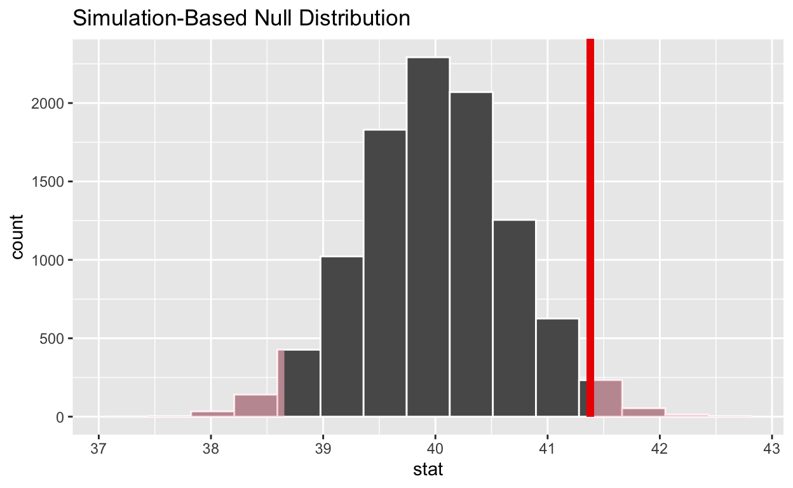

In this tutorial, you will learn how to use the infer R package to conduct hypothesis tests on tidy data. Rather than providing methods for specific statistical tests, this package consolidates the principles that are shared among common hypothesis tests into a set of 4 main verbs (functions), supplemented with many utilities to visualize and extract value from their outputs.
This tutorial assumes some background with hypothesis testing and base R. To read about the intuition behind hypothesis testing and the design of this package, see the Introduction section of vignette("infer").
gss DatasetThroughout this tutorial, we’ll make use of the gss dataset supplied by infer, containing a sample of 500 observations of 11 variables from the General Social Survey. Print the gss dataset to check it out!
# check out the `gss` dataset# Type `gss` and then click the Submit Answer button.gssgradethis::grade_code(paste0(gradethis::random_praise(),
" Each of these rows is a survey response, containing",
" demographic information on the respondent as well",
" as some of their responses. See ?gss for more",
" information!"))The workflow of this package is designed around four main verbs. Starting out with some dataset,
specify() allows you to specify the variable, or relationship between variables, that you’re interested in.hypothesize() allows you to declare the null hypothesis.generate() allows you to generate data reflecting the null hypothesis.calculate() allows you to calculate a distribution of statistics from the generated data to form the null distribution.The specify function can be used to specify which of the variable(s) in the dataset you’re interested in. If you’re only interested in, say, the age of the respondents, you might write:
gss %>%
specify(response = age)## Response: age (numeric)
## # A tibble: 500 x 1
## age
## <dbl>
## 1 36
## 2 34
## 3 24
## 4 42
## 5 31
## 6 32
## 7 48
## 8 36
## 9 30
## 10 33
## # … with 490 more rowsOn the front-end, the output of specify just looks like it selects off the columns in the dataframe that you’ve specified. Checking the class of this object, though:
gss %>%
specify(response = age) %>%
class()## [1] "infer" "tbl_df" "tbl" "data.frame"We can see that the infer class has been appended on top of the dataframe classes–this new class stores some extra metadata.
Let’s try this out. Use specify() to specify interest in the hours variable from the gss dataset.
# Try piping `gss` into `specify(response = hours)`
# and then clicking the Submit Answer button.# Type `gss %>% specify(response = hours)`
# and then click the Submit Answer button.gss %>% specify(response = hours)gradethis::grade_code(paste0(gradethis::random_praise()))If you’re interested in two variables–age and partyid, for example–you can specify their relationship in one of two (equivalent) ways:
# as a formula
gss %>%
specify(age ~ partyid)
# with the named arguments
gss %>%
specify(response = age, explanatory = partyid)Let’s give this a shot, specifying interest in hours as a function of college with whichever syntax you prefer.
# Try piping `gss` into `specify(response = hours, explanatory = college)`
# and then clicking the Submit Answer button.# Type `gss %>% specify(response = hours, explanatory = college)`
# and then click the Submit Answer button.gradethis::grade_result(
gradethis::pass_if(~ identical(.result, gss %>%
specify(response = hours,
explanatory = college)),
gradethis::random_praise()))If you’re doing inference on one proportion or a difference in proportions, you will need to use the success argument to specify which level of your response variable is a success. For instance, if you’re interested in the proportion of the population with a college degree, you might use the following code:
# specifying for inference on proportions
gss %>%
specify(response = college, success = "degree")The next step in the infer pipeline is often to declare a null hypothesis using hypothesize(). The first step is to supply one of "independence" or "point" to the null argument. If your null hypothesis assumes independence between two variables, then this is all you need to supply to hypothesize():
gss %>%
specify(age ~ partyid) %>%
hypothesize(null = "independence")Again, if we ran this code, the dataframe outputted from hypothesize() would look almost exactly the same as it did when it came out of specify(), but infer now “knows” your null hypothesis.
Starting off from the code we used to specify() the hours and college, hypothesize() that these two variables are independent of each other.
gss %>%
specify(response = hours, explanatory = college)# Try piping the provided code into `hypothesize(null = \"independence\")`
# and then clicking the Submit Answer button."# Type:
gss %>%
specify(response = hours, explanatory = college)
hypothesize(null = "independence")
# and then click the Submit Answer button.gradethis::grade_result(
gradethis::pass_if(~ identical(.result, gss %>%
specify(response = hours,
explanatory = college) %>%
hypothesize("independence")),
gradethis::random_praise()))If you’re doing inference on a point estimate, you will also need to provide one of p (the true proportion of successes, between 0 and 1), mu (the true mean), med (the true median), or sigma (the true standard deviation). For instance, if the null hypothesis is that the mean number of hours Americans work per week is 40, we would write:
gss %>%
specify(response = hours) %>%
hypothesize(null = "point", mu = 40)Alter the code from above to hypothesize that the true standard deviation of hours worked per week is 10.
gss %>%
specify(response = hours) %>%
hypothesize(null = "point", mu = 40)# The argument to put in place of `mu` is `sigma`.# Type:
gss %>%
specify(response = hours) %>%
hypothesize(null = "point", sigma = 10)
# and then click the Submit Answer button.gradethis::grade_result(
gradethis::pass_if(~ identical(.result, gss %>%
specify(response = hours) %>%
hypothesize(null = "point", sigma = 10)),
gradethis::random_praise()))Once we’ve asserted our null hypothesis using hypothesize(), we can construct a reference distribution based on this hypothesis. We can do this using one of several methods, supplied in the type argument:
bootstrap: A bootstrap sample will be drawn for each replicate, where a sample of size equal to the input sample size is drawn (with replacement) from the input sample data.permute: For each replicate, each input value will be randomly reassigned (without replacement) to a new output value in the sample.simulate: A value will be sampled from a theoretical distribution with parameters specified in hypothesize() for each replicate. (This option is currently only applicable for testing point estimates.)Continuing on with our example from earlier, about the average number of hours worked a week, we might write:
gss %>%
specify(response = hours) %>%
hypothesize(null = "point", mu = 40) %>%
generate(reps = 1000, type = "bootstrap")In the above example, we take 1000 bootstrap samples to form our reference distribution for the true mean number of hours worked per week. Modify the code below to generate a reference distribution for the true median number of hours worked per week from 500 repetitions drawn using the bootstrap generation type.
gss %>%
specify(response = hours) %>%
hypothesize(null = "point", mu = 40) %>%
generate(reps = 1000, type = "bootstrap")# The argument to put in place of `mu` is `med`.# Type:
gss %>%
specify(response = hours) %>%
hypothesize(null = "point", med = 40) %>%
generate(reps = 500, type = "bootstrap")
# and then click the Submit Answer button.gss %>%
specify(response = hours) %>%
hypothesize(null = "point", med = 40) %>%
generate(reps = 500, type = "bootstrap")gradethis::grade_code(correct = paste0(gradethis::random_praise(),
" A smaller `reps` argument usually means that the code will run much",
" faster, but also that the resulting reference distribution (and ",
" inferences made from it) will be less accurate."))To generate a null distribution for the independence of two variables, imagine randomly reshuffling the pairings of explanatory and response variables to break any existing association. Extend the following code to generate 500 replicates using the “permute” generation type that can be used to create a reference distribution under the assumption that political party affiliation (partyid) is not affected by age (age):
gss %>%
specify(partyid ~ age) %>%
hypothesize(null = "independence")# Pipe the given code into a `generate()` call!# Type:
gss %>%
specify(partyid ~ age) %>%
hypothesize(null = "independence") %>%
generate(reps = 500, type = "permute")
# and then click the Submit Answer button.gss %>%
specify(partyid ~ age) %>%
hypothesize(null = "independence") %>%
generate(reps = 500, type = "permute")gradethis::grade_code(correct = paste0(gradethis::random_praise(),
" That's it for generate()."))Depending on whether you’re carrying out computation-based inference or theory-based inference, you will either supply calculate() with the output of generate() or hypothesize, respectively. The function also takes in a stat argument, which is currently one of “mean”, “median”, “sum”, “sd”, “prop”, “count”, “diff in means”, “diff in medians”, “diff in props”, “Chisq”, “F”, “t”, “z”, “slope”, or “correlation”. For example, continuing our example above to calculate the null distribution of mean hours worked per week:
gss %>%
specify(response = hours) %>%
hypothesize(null = "point", mu = 40) %>%
generate(reps = 1000, type = "bootstrap") %>%
calculate(stat = "mean")## # A tibble: 1,000 x 2
## replicate stat
## <int> <dbl>
## 1 1 39.3
## 2 2 39.8
## 3 3 41.1
## 4 4 40.5
## 5 5 38.9
## 6 6 40.7
## 7 7 39.9
## 8 8 39.8
## 9 9 39.2
## 10 10 40.6
## # … with 990 more rowsThe output of calculate() here shows us the sample statistic (in this case, the mean) for each of our 1000 replicates.
Let’s give calculate() a try. Add to the following code to calculate the median of each bootstrap sample for the number of hours of worked per week.
gss %>%
specify(response = hours) %>%
hypothesize(null = "point", med = 40) %>%
generate(reps = 1000, type = "bootstrap")# Pipe the given code into a `calculate()` call!# Type:
gss %>%
specify(response = hours) %>%
hypothesize(null = "point", med = 40) %>%
generate(reps = 1000, type = "bootstrap") %>%
calculate(stat = "median")
# and then click the Submit Answer button.gss %>%
specify(response = hours) %>%
hypothesize(null = "point", med = 40) %>%
generate(reps = 1000, type = "bootstrap") %>%
calculate(stat = "median")gradethis::grade_code(correct = paste0(gradethis::random_praise(),
" Now let's try working with two variables."))If you’re carrying out inference on differences in means, medians, or proportions, or t and z statistics, you will need to supply an order argument, giving the order in which the explanatory variables should be subtracted. For instance, to find the difference in mean age of those that have a college degree and those that don’t, we might write:
gss %>%
specify(age ~ college) %>%
hypothesize(null = "independence") %>%
generate(reps = 1000, type = "permute") %>%
calculate("diff in means", order = c("degree", "no degree"))## # A tibble: 1,000 x 2
## replicate stat
## <int> <dbl>
## 1 1 0.518
## 2 2 -1.24
## 3 3 -1.11
## 4 4 1.28
## 5 5 -1.02
## 6 6 -0.787
## 7 7 0.271
## 8 8 1.41
## 9 9 1.17
## 10 10 1.77
## # … with 990 more rowsLet’s try using calculate with two variables. Add to the following code to calculate the difference in mean number of hours worked (hours) depending on whether one has a college degree or not (college)–subtract in the order degree - no degree.
gss %>%
specify(hours ~ college) %>%
hypothesize(null = "independence") %>%
generate(reps = 1000, type = "permute")# Pipe the given code into a call to `calculate()`!# The argument to `stat` in `calculate` should be "diff in means"# The argument to `order` in `calculate` should be c("degree", "no degree")# Pipe the given code into
# calculate(stat = "diff in means", order = c("degree", "no degree"))# Type:
gss %>%
specify(hours ~ college) %>%
hypothesize(null = "independence") %>%
generate(reps = 1000, type = "permute") %>%
calculate(stat = "diff in means", order = c("degree", "no degree"))
# and then click the Submit Answer button.gss %>%
specify(hours ~ college) %>%
hypothesize(null = "independence") %>%
generate(reps = 1000, type = "permute") %>%
calculate(stat = "diff in means", order = c("degree", "no degree"))gradethis::grade_code(correct = paste0(gradethis::random_praise()))You can also use calculate() to calculate observed statistics from your data. For example, to calculate the mean number of hours worked per week by respondents in our data, we might write:
gss %>%
specify(response = hours) %>%
calculate(stat = "mean")## # A tibble: 1 x 1
## stat
## <dbl>
## 1 41.4Notice this looks almost exactly like the code to generate the reference distribution of mean number of hours worked from the earlier example, except we’ve skipped the hypothesize() and generate() steps.
We can also calculate observed statistics that require a null hypothesis. For example, if we suspect that the true mean number of hours worked in the population is 40 hours, we could run the following code to find an observed \(t\) statistic:
gss %>%
specify(response = hours) %>%
hypothesize(null = "point", mu = 40) %>%
calculate(stat = "t")## # A tibble: 1 x 1
## stat
## <dbl>
## 1 2.09Building off of the following code, calculate() the proportion ("prop") of respondents in the sample with a college degree.
gss %>%
specify(response = college, success = "degree")# Pipe the given code into a `calculate()` call!# Type:
gss %>%
specify(response = college, success = "degree") %>%
calculate(stat = "prop")
# and then click the Submit Answer button.gss %>%
specify(response = college, success = "degree") %>%
calculate(stat = "prop")gradethis::grade_code(correct = paste0(gradethis::random_praise(),
"That's it for the 4 main verbs!"))infer also offers several utilities to extract the meaning out of summary statistics and null distributions—the package provides functions to visualize where a statistic is relative to a distribution (with visualize()), calculate p-values (with get_p_value()), and calculate confidence intervals (with get_confidence_interval()).
To illustrate the usage of these different functions, we’ll go back to the example of determining whether the true mean number of hours worked per week is 40 hours.
# find the point estimate
point_estimate <- gss %>%
specify(response = hours) %>%
calculate(stat = "mean")
point_estimate## # A tibble: 1 x 1
## stat
## <dbl>
## 1 41.4# generate a null distribution
null_dist <- gss %>%
specify(response = hours) %>%
hypothesize(null = "point", mu = 40) %>%
generate(reps = 10000, type = "bootstrap") %>%
calculate(stat = "mean")Our point estimate 41.382 seems pretty close to 40, but a little bit different. We might wonder if this difference is just due to random chance, or if the mean number of hours worked per week in the population really isn’t 40.
We could initially just visualize the null distribution.
null_dist %>%
visualize()Where does our sample’s observed statistic lie on this distribution? We can use the obs_stat argument to specify this.
null_dist %>%
visualize() +
shade_p_value(obs_stat = point_estimate, direction = "two_sided")
Notice that infer has also shaded the regions of the null distribution that are as (or more) extreme than our observed statistic. (Also, note that we now use the + operator to apply the shade_p_value function. This is because visualize outputs a plot object from ggplot2 instead of a data frame, and the + operator is needed to add the p-value layer to the plot object.)
The red bar from that last visualization looks like it’s pretty far out on the right tail of the null distribution, so observing a sample mean of 41.382 hours would be pretty unlikely if the mean was actually 40 hours. How unlikely, though?
# get a two-tailed p-value
p_value <- null_dist %>%
get_p_value(obs_stat = point_estimate, direction = "two_sided")
p_value## # A tibble: 1 x 1
## p_value
## <dbl>
## 1 0.0364It looks like the p-value is 0.0364, which is pretty small—if the true mean number of hours worked per week was actually 40, the probability of our sample mean being this far (1.382 hours) from 40 would be 0.0364. This may or may not be statistically significantly different, depending on the significance level \(\alpha\) you decided on before you ran this analysis. If you had set \(\alpha = .05\), then this difference would be statistically significant, but if you had set \(\alpha = .01\), then it would not be.
To get a confidence interval around our estimate, we can write:
# start with the null distribution
null_dist %>%
# calculate the confidence interval around the point estimate
get_confidence_interval(point_estimate = point_estimate,
# at the 95% confidence level
level = .95,
# using the standard error
type = "se")## # A tibble: 1 x 2
## lower upper
## <dbl> <dbl>
## 1 40.1 42.7As you can see, 40 hours per week is not contained in this interval, which aligns with our previous conclusion that this finding is significant at the confidence level \(\alpha = .05\).
The following code calculates an observed \(t\) statistic for the distribution
observed_statistic <- gss %>%
specify(hours ~ college) %>%
calculate(stat = "diff in means", order = c("degree", "no degree"))
null_dist <- gss %>%
specify(hours ~ college) %>%
hypothesize(null = "independence") %>%
generate(reps = 1000, type = "permute") %>%
calculate(stat = "diff in means", order = c("degree", "no degree"))You have access to the observed_statistic and null_dist objects. Modify the following code to visualize where the observed statistic lies on the null distribution (with direction set to "two-sided".)
null_dist %>%
visualize()# Pipe the given code into a `shade_p_value()` call!# Type:
null_dist %>%
visualize() %>%
shade_p_value(obs_stat = observed_statistic, direction = "two_sided")
# and then click the Submit Answer button.null_dist %>%
visualize() %>%
shade_p_value(obs_stat = observed_statistic, direction = "two_sided")gradethis::grade_code(correct = paste0(gradethis::random_praise()))Let’s try to put together everything we’ve learned so far.
To start off, use gss and functions from infer to find the observed difference in mean age (age) by college degree status (college), subtracted in the order degree - no degree.
# Use the specify() and calculate() functions!# Here's the first two lines:
gss %>%
specify(age ~ college)
# See if you can write the last one!# Type:
gss %>%
specify(age ~ college) %>%
calculate(stat = "diff in means", order = c("degree", "no degree"))
# and then click the Submit Answer button.gradethis::grade_result(
gradethis::pass_if(~ identical(.result, gss %>%
specify(age ~ college) %>%
calculate(stat = "diff in means", order = c("degree", "no degree"))),
gradethis::random_praise()))You have access to the observed difference you calculated in the last problem, stored as observed_diff. Now, use gss and functions from infer to find a null distribution for the difference in mean age (age) by college degree status (college), again subtracting in the order degree - no degree, using 1000 permutation samples. Use the formula (y ~ x) notation in your call to specify().
# Use all of the 4 main verbs!# Here's the first two lines:
gss %>%
specify(age ~ college)
# See if you can write the next three!# Here's the first three lines:
gss %>%
specify(age ~ college) %>%
hypothesize(null = "independence")
# See if you can write the last two!# Type:
gss %>%
specify(age ~ college) %>%
hypothesize(null = "independence") %>%
generate(reps = 1000, type = "permute") %>%
calculate(stat = "diff in means", order = c("degree", "no degree"))
# and then click the Submit Answer button.gss %>%
specify(age ~ college) %>%
hypothesize(null = "independence") %>%
generate(reps = 1000, type = "permute") %>%
calculate(stat = "diff in means", order = c("degree", "no degree"))gradethis::grade_code(correct = paste0(gradethis::random_praise()))You have access to the observed difference and null distribution you calculated in the last problems, stored as observed_diff and null_dist. Now, use gss and functions from infer to visualize where the observed statistic lies on the null distribution (with direction set to "two-sided".)
# Use visualize() and shade_p_value!# Have you made sure to add the shade_p_value() layer with
# `+` rather than piping the visualize() layer with `%>%`?# Here's the first two lines
null_dist %>%
visualize()
# See if you can write the last one!# Type:
null_dist %>%
visualize() +
shade_p_value(obs_stat = observed_diff, direction = "two_sided")
# and then click the Submit Answer button.null_dist %>%
visualize() +
shade_p_value(obs_stat = observed_diff, direction = "two_sided")gradethis::grade_code(correct = paste0(gradethis::random_praise(),
" That's it! You've got `infer` down. Congrats on making it all of the",
" way through this tutorial! Many of the examples provided",
" in this tutorial are included in the main `infer` vignette,",
" accessible by calling vignette(\"infer\") in your console."))